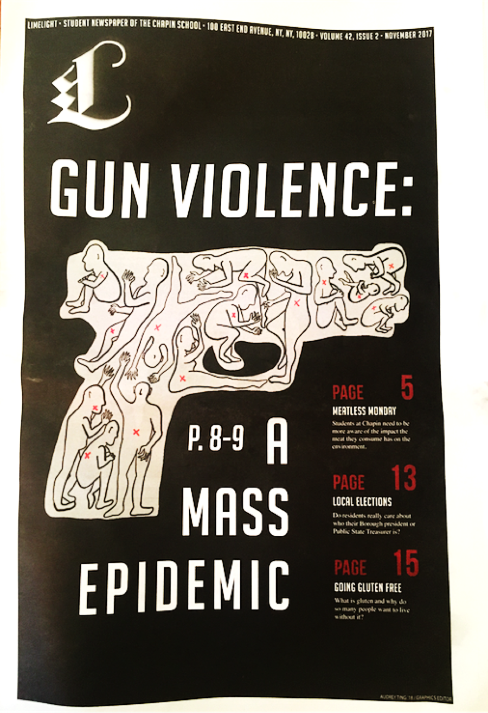
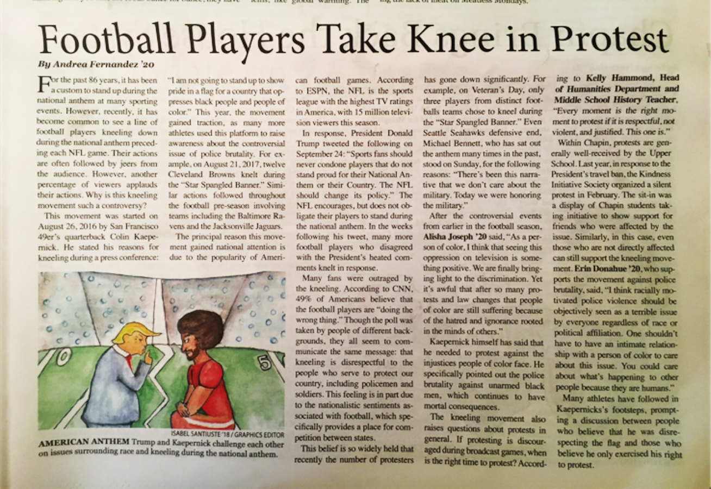

Prep for Prep
In 5th grade, I applied for a program called Prep for Prep. I was accepted and joined Contingent XXVI. Prep for Prep is a highly selective leadership program for bright students of color. Through a 14-month intensive, I was academically prepared to enter an independent school. I was able to make great connections with students and teachers. To this day, I continue to give back to the Prep community by being part of the admissions commitee, which helps arrange materials for testing days of future Prep generations.
The Chapin School
Starting 6th grade, I entered The Chapin School. The Chapin School is an independent day school located on the Upper East Side for students K-12. At Chapin, I am able to participate in a variety of clubs as well as pursue personal projects. For example, I am a writer at my schools newspaper, Limelight. On the right is the picture of the magazine cover.

